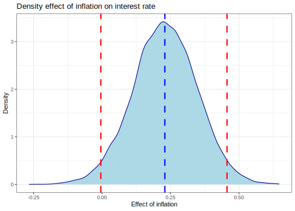
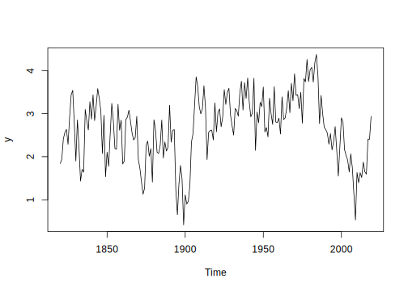

8.2 ARMA processes
Since the seminal work of George E. P. Box and Jenkins (1976), autoregressive moving average (ARMA) models have become ubiquitous in time series analysis. Thus, we present a brief introduction to these models in this section.
Let’s start with the linear Gaussian model with autoregressive errors:
\[\begin{align} y_t &= \boldsymbol{x}_t^{\top} \boldsymbol{\beta} + \mu_t \tag{8.5} \\ \phi(L) \mu_t &= \epsilon_t \tag{8.6} \end{align}\]
where \(\boldsymbol{x}_t\) is a \(K\)-dimensional vector of regressors, \(\epsilon_t \stackrel{iid}{\sim} \, N(0, \sigma^2)\), and \(\phi(L) = 1 - \phi_1 L - \phi_2 L^2 - \dots - \phi_p L^p\) is a polynomial in the lag operator \(L\), where \(L z_t = z_{t-1}\), and in general, \(L^r z_t = z_{t-r}\).
Thus, we see that the stochastic error \(\mu_t\) follows an autoregressive process of order \(p\), i.e., \(\mu_t \sim AR(p)\). It is standard practice to assume that \(\mu_t\) is second-order stationary, meaning the mean, variance, and autocovariance of \(\mu_t\) are finite and independent of \(t\) and \(s\), although \(\mathbb{E}[\mu_t \mu_s]\) may depend on \(|t - s|\). Then, all roots of \(\phi(L)\) lie outside the unit circle. For instance, for an \(AR(1)\), \(1 - \phi_1 L = 0\), implying \(L = 1/\phi_1\), such that \(|\phi_1| < 1\) for the process to be second-order stationary.
The likelihood function conditional on the first \(p\) observations is:
\[\begin{align*} p(y_{p+1}, \dots, y_T \mid y_{p}, \dots, y_1, \boldsymbol{\theta}) &= \prod_{t=p+1}^{T} p(y_t \mid \mathcal{I}_{t-1}, \boldsymbol{\theta}) \\ &\propto \sigma^{-(T-p)} \exp\left\{-\frac{1}{2\sigma^2} \sum_{t=p+1}^T \left(y_t - \hat{y}_{t \mid t-1, \boldsymbol{\theta}}\right)^2 \right\} \end{align*}\]
where \(\mathcal{I}_{t-1}\) is the past information, \(\boldsymbol{\theta}\) collects all parameters \((\boldsymbol{\beta}, \phi_1, \dots, \phi_p, \sigma^2)\), and \(\hat{y}_{t \mid t-1, \boldsymbol{\theta}} = (1 - \phi(L)) y_t + \phi(L) \boldsymbol{x}^{\top} \boldsymbol{\beta}\).
We can see that multiplying the first expression in Equation (8.5) by \(\phi(L)\), we can express the model as \[\begin{align} y_t^*=\boldsymbol{x}_t^{*\top}\boldsymbol{\beta}+\epsilon_t \tag{8.7} \end{align}\] where \(y_t^*=\phi(L)y_t\) and \(\boldsymbol{x}_t^{*}=\phi(L)\boldsymbol{x}_t\).
Thus, collecting all observations \(t=p+1,p+2,\dots,T\), we have \(\boldsymbol{y}^*=\boldsymbol{X}^*\boldsymbol{\beta}+\boldsymbol{\epsilon}\), where \(\boldsymbol{\epsilon}\sim N(\boldsymbol{0},\sigma^2\boldsymbol{I}_{T-p})\), \(\boldsymbol{y}^*\) is a \(T-p\) dimensional vector, and \(\boldsymbol{X}^*\) is a \((T-p)\times K\) dimensional matrix.
Assuming that \(\boldsymbol{\beta}\mid \sigma\sim N(\boldsymbol{\beta}_0,\sigma^2\boldsymbol{B}_0)\), \(\sigma^2\sim IG(\alpha_0/2,\delta_0/2)\) and \(\boldsymbol{\phi}\sim N(\boldsymbol{\phi}_0,\boldsymbol{\Phi}_0)\mathbb{1}(\boldsymbol{\phi}\in S_{\boldsymbol{\phi}})\), where \(S_{\boldsymbol{\phi}}\) is the stationary region of \(\boldsymbol{\phi}=[\phi_1 \ \dots \ \phi_p]^{\top}\). Then, Equation (8.7) implies that \(\boldsymbol{\beta}\mid \sigma^2,\boldsymbol{\phi},\boldsymbol{y},\boldsymbol{X}\sim N(\boldsymbol{\beta}_n, \sigma^2{\boldsymbol{B}}_n)\), where \(\boldsymbol{B}_n = (\boldsymbol{B}_0^{-1} + \boldsymbol{X}^{*\top}\boldsymbol{X}^{*})^{-1}\) and \(\boldsymbol{\beta}_n = \boldsymbol{B}_n(\boldsymbol{B}_0^{-1}\boldsymbol{\beta}_0 + \boldsymbol{X}^{*\top}\boldsymbol{y}^{*})\). In addition, \(\sigma^2\mid \boldsymbol{\beta},\boldsymbol{\phi},\boldsymbol{y},\boldsymbol{X}\sim IG(\alpha_n/2,\delta_n/2)\) where \(\alpha_n=\alpha_0+T-p\) and \(\delta_n=\delta_0+(\boldsymbol{y}^*-\boldsymbol{X}^{*}\boldsymbol{\beta})^{\top}(\boldsymbol{y}^*-\boldsymbol{X}^{*}\boldsymbol{\beta})+(\boldsymbol{\beta}-\boldsymbol{\beta}_0)\boldsymbol{B}_0^{-1}(\boldsymbol{\beta}-\boldsymbol{\beta}_0)\). Thus, the previous conditional posterior distributions imply that we can use a Gibbs sampling algorithm to perform inference of these parameters (Siddhartha Chib 1993).
We know from Equation (8.5) that \(\mu_t=y_t-\boldsymbol{x}_t^{\top}\boldsymbol{\beta}\), and from Equation (8.6) that \(\mu_t=\phi_1\mu_{t-1}+\dots+\phi_p\mu_{t-p}+\epsilon_t\), \(t=p+1,\dots,T\). In matrix notation \(\boldsymbol{\mu}=\boldsymbol{U}\boldsymbol{\phi}+\boldsymbol{\epsilon}\), where \(\boldsymbol{\mu}\) is a \(T-p\) dimensional vector, \(\boldsymbol{U}\) is a \((T-p)\times p\) matrix whose \(t\)-th row is \([\mu_{t-1} \ \dots \ \mu_{t-p}]\). Thus, the posterior distribution of \(\boldsymbol{\phi}\mid \boldsymbol{\beta},\sigma^2,\boldsymbol{y},\boldsymbol{X}\) is \(N(\boldsymbol{\phi}_n, \boldsymbol{\Phi}_n)\mathbb{1}(\boldsymbol{\phi}\in S_{\boldsymbol{\phi}})\), where \(\boldsymbol{\Phi}_n=(\boldsymbol{\Phi}_0^{-1}+\sigma^{-2}\boldsymbol{U}^{\top}\boldsymbol{U})\) and \(\boldsymbol{\phi}_n=\boldsymbol{\Phi}_n(\boldsymbol{\Phi}_0^{-1}\boldsymbol{\phi}_0+\sigma^{-2}\boldsymbol{U}^{\top}\boldsymbol{\mu})\) (see Exercise 4).
Drawing from the model under the stationarity restriction is straightforward: we simply sample from the multivariate normal distribution and discard draws that do not satisfy the stationarity condition. The proportion of draws that meet this restriction represents the conditional probability that the process is stationary.
Example: Effects of inflation on interest rate II
We specify a dynamic linear model in the example of the effects of inflation on interest rates to account for a potential dynamic relationship. However, we can introduce dynamics in this model by assuming \[ \Delta i_t = \beta_{1} + \beta_{2} \Delta inf_t + \beta_{3} \Delta def_t + \mu_t, \] where \(\mu_t = \phi \mu_{t-1} + \epsilon_t\). This leads to the model: \[ \Delta i_t = \beta_{1}(1-\phi_1) + \phi_1 \Delta i_{t-1} + \beta_{2}(\Delta inf_t - \phi_1 \Delta inf_{t-1}) + \beta_{3}(\Delta def_t - \phi_1 \Delta def_{t-1}) + \epsilon_t. \] Thus, we again use the dataset 16INTDEF.csv provided by Jeffrey M. Wooldridge (2016) to illustrate linear regressions with \(AR(1)\) errors.
The following code demonstrates how to implement this application using vague priors, assuming \(\alpha_0 = \delta_0 = 0.01\), \(\boldsymbol{\beta}_0 = \boldsymbol{0}\), \(\boldsymbol{B}_0 = \boldsymbol{I}\), \(\boldsymbol{\phi}_0 = \boldsymbol{0}\), and \(\boldsymbol{\Phi}_0 = \boldsymbol{I}\). We use 15,000 MCMC iterations, with a burn-in of 5,000 and a thinning parameter of 5.
rm(list = ls())
set.seed(010101)
DataIntRate <- read.csv("https://raw.githubusercontent.com/besmarter/BSTApp/refs/heads/master/DataApp/16INTDEF.csv", sep = ",", header = TRUE, quote = "")
attach(DataIntRate)## The following objects are masked from DataIntRate (pos = 4):
##
## def, i3, inf, Yearyt <- diff(i3); ytlag <- dplyr::lag(yt, n = 1)
T <- length(yt)
Xt <- cbind(diff(inf), diff(def)); Xtlag <- dplyr::lag(Xt, n = 1)
K <- dim(Xt)[2] + 1
Reg <- lm(yt ~ ytlag + I(Xt[,-1] - Xtlag))
SumReg <- summary(Reg); SumReg##
## Call:
## lm(formula = yt ~ ytlag + I(Xt[, -1] - Xtlag))
##
## Residuals:
## Min 1Q Median 3Q Max
## -2.85560 -0.86022 0.04917 0.95966 2.85684
##
## Coefficients:
## Estimate Std. Error t value Pr(>|t|)
## (Intercept) 0.07375 0.19570 0.377 0.7081
## ytlag 0.13495 0.15530 0.869 0.3897
## I(Xt[, -1] - Xtlag)1 -0.13756 0.07594 -1.811 0.0771 .
## I(Xt[, -1] - Xtlag)2 -0.14807 0.09212 -1.607 0.1153
## ---
## Signif. codes: 0 '***' 0.001 '**' 0.01 '*' 0.05 '.' 0.1 ' ' 1
##
## Residual standard error: 1.331 on 43 degrees of freedom
## (1 observation deleted due to missingness)
## Multiple R-squared: 0.1506, Adjusted R-squared: 0.09137
## F-statistic: 2.542 on 3 and 43 DF, p-value: 0.06878PostSig2 <- function(Beta, Phi){
Xstar<- matrix(NA, T-1, K - 1)
ystar <- matrix(NA, T-1, 1)
for(t in 2:T){
Xstar[t-1,] <- Xt[t,] - Phi*Xt[t-1,]
ystar[t-1,] <- yt[t] - Phi*yt[t-1]
}
Xstar <- cbind(1, Xstar)
an <- T - 1 + a0
dn <- d0 + t(ystar - Xstar%*%Beta)%*%(ystar - Xstar%*%Beta) + t(Beta - b0)%*%B0i%*%(Beta - b0)
sig2 <- invgamma::rinvgamma(1, shape = an/2, rate = dn/2)
return(sig2)
}
PostBeta <- function(sig2, Phi){
Xstar<- matrix(NA, T-1, K - 1)
ystar <- matrix(NA, T-1, 1)
for(t in 2:T){
Xstar[t-1,] <- Xt[t,] - Phi*Xt[t-1,]
ystar[t-1,] <- yt[t] - Phi*yt[t-1]
}
Xstar <- cbind(1, Xstar)
XtXstar <- t(Xstar)%*%Xstar
Xtystar <- t(Xstar)%*%ystar
Bn <- solve(B0i + XtXstar)
bn <- Bn%*%(B0i%*%b0 + Xtystar)
Beta <- MASS::mvrnorm(1, bn, sig2*Bn)
return(Beta)
}
PostPhi <- function(sig2, Beta){
u <- yt - cbind(1,Xt)%*%Beta
U <- u[-T]
ustar <- u[-1]
UtU <- t(U)%*%U
Utu <- t(U)%*%ustar
Phin <- solve(Phi0i + sig2^(-1)*UtU)
phin <- Phin%*%(Phi0i%*%phi0 + sig2^(-1)*Utu)
Phi <- truncnorm::rtruncnorm(1, a = -1, b = 1, mean = phin, sd = Phin^0.5)
return(Phi)
}
# Hyperparameters
d0 <- 0.01; a0 <- 0.01
b0 <- rep(0, K); c0 <- 1;
B0 <- c0*diag(K); B0i <- solve(B0)
phi0 <- 0; Phi0 <- 1; Phi0i <- 1/Phi0
# MCMC parameters
mcmc <- 15000
burnin <- 5000
tot <- mcmc + burnin
thin <- 1
PostBetas <- matrix(0, mcmc+burnin, K)
PostSigma2s <- rep(0, mcmc+burnin)
PostPhis <- rep(0, mcmc+burnin)
Beta <- rep(0, K); Phi <- 0
sig2 <- SumReg$sigma^2; Phi <- SumReg$coefficients[2,1]
Beta <- SumReg$coefficients[c(1,3,4),1]
pb <- txtProgressBar(min = 0, max = tot, style = 3)## | | | 0%for(s in 1:tot){
sig2 <- PostSig2(Beta = Beta, Phi = Phi)
PostSigma2s[s] <- sig2
Beta <- PostBeta(sig2 = sig2, Phi = Phi)
PostBetas[s,] <- Beta
Phi <- PostPhi(sig2 = sig2, Beta = Beta)
PostPhis[s] <- Phi
setTxtProgressBar(pb, s)
}## | | | 1% | |= | 1% | |= | 2% | |== | 2% | |== | 3% | |== | 4% | |=== | 4% | |=== | 5% | |==== | 5% | |==== | 6% | |===== | 6% | |===== | 7% | |===== | 8% | |====== | 8% | |====== | 9% | |======= | 9% | |======= | 10% | |======= | 11% | |======== | 11% | |======== | 12% | |========= | 12% | |========= | 13% | |========= | 14% | |========== | 14% | |========== | 15% | |=========== | 15% | |=========== | 16% | |============ | 16% | |============ | 17% | |============ | 18% | |============= | 18% | |============= | 19% | |============== | 19% | |============== | 20% | |============== | 21% | |=============== | 21% | |=============== | 22% | |================ | 22% | |================ | 23% | |================ | 24% | |================= | 24% | |================= | 25% | |================== | 25% | |================== | 26% | |=================== | 26% | |=================== | 27% | |=================== | 28% | |==================== | 28% | |==================== | 29% | |===================== | 29% | |===================== | 30% | |===================== | 31% | |====================== | 31% | |====================== | 32% | |======================= | 32% | |======================= | 33% | |======================= | 34% | |======================== | 34% | |======================== | 35% | |========================= | 35% | |========================= | 36% | |========================== | 36% | |========================== | 37% | |========================== | 38% | |=========================== | 38% | |=========================== | 39% | |============================ | 39% | |============================ | 40% | |============================ | 41% | |============================= | 41% | |============================= | 42% | |============================== | 42% | |============================== | 43% | |============================== | 44% | |=============================== | 44% | |=============================== | 45% | |================================ | 45% | |================================ | 46% | |================================= | 46% | |================================= | 47% | |================================= | 48% | |================================== | 48% | |================================== | 49% | |=================================== | 49% | |=================================== | 50% | |=================================== | 51% | |==================================== | 51% | |==================================== | 52% | |===================================== | 52% | |===================================== | 53% | |===================================== | 54% | |====================================== | 54% | |====================================== | 55% | |======================================= | 55% | |======================================= | 56% | |======================================== | 56% | |======================================== | 57% | |======================================== | 58% | |========================================= | 58% | |========================================= | 59% | |========================================== | 59% | |========================================== | 60% | |========================================== | 61% | |=========================================== | 61% | |=========================================== | 62% | |============================================ | 62% | |============================================ | 63% | |============================================ | 64% | |============================================= | 64% | |============================================= | 65% | |============================================== | 65% | |============================================== | 66% | |=============================================== | 66% | |=============================================== | 67% | |=============================================== | 68% | |================================================ | 68% | |================================================ | 69% | |================================================= | 69% | |================================================= | 70% | |================================================= | 71% | |================================================== | 71% | |================================================== | 72% | |=================================================== | 72% | |=================================================== | 73% | |=================================================== | 74% | |==================================================== | 74% | |==================================================== | 75% | |===================================================== | 75% | |===================================================== | 76% | |====================================================== | 76% | |====================================================== | 77% | |====================================================== | 78% | |======================================================= | 78% | |======================================================= | 79% | |======================================================== | 79% | |======================================================== | 80% | |======================================================== | 81% | |========================================================= | 81% | |========================================================= | 82% | |========================================================== | 82% | |========================================================== | 83% | |========================================================== | 84% | |=========================================================== | 84% | |=========================================================== | 85% | |============================================================ | 85% | |============================================================ | 86% | |============================================================= | 86% | |============================================================= | 87% | |============================================================= | 88% | |============================================================== | 88% | |============================================================== | 89% | |=============================================================== | 89% | |=============================================================== | 90% | |=============================================================== | 91% | |================================================================ | 91% | |================================================================ | 92% | |================================================================= | 92% | |================================================================= | 93% | |================================================================= | 94% | |================================================================== | 94% | |================================================================== | 95% | |=================================================================== | 95% | |=================================================================== | 96% | |==================================================================== | 96% | |==================================================================== | 97% | |==================================================================== | 98% | |===================================================================== | 98% | |===================================================================== | 99% | |======================================================================| 99% | |======================================================================| 100%keep <- seq((burnin+1), tot, thin)
PosteriorBetas <- coda::mcmc(PostBetas[keep,])
summary(PosteriorBetas)##
## Iterations = 1:15000
## Thinning interval = 1
## Number of chains = 1
## Sample size per chain = 15000
##
## 1. Empirical mean and standard deviation for each variable,
## plus standard error of the mean:
##
## Mean SD Naive SE Time-series SE
## [1,] 0.0663 0.1904 0.0015545 0.001554
## [2,] 0.2293 0.1171 0.0009563 0.001163
## [3,] -0.1451 0.1704 0.0013913 0.001391
##
## 2. Quantiles for each variable:
##
## 2.5% 25% 50% 75% 97.5%
## var1 -0.307875 -0.05914 0.06597 0.19276 0.4392
## var2 -0.004462 0.15191 0.22912 0.30839 0.4564
## var3 -0.475203 -0.25696 -0.14711 -0.03156 0.1918##
## Iterations = 1:15000
## Thinning interval = 1
## Number of chains = 1
## Sample size per chain = 15000
##
## 1. Empirical mean and standard deviation for each variable,
## plus standard error of the mean:
##
## Mean SD Naive SE Time-series SE
## 1.698250 0.385326 0.003146 0.003462
##
## 2. Quantiles for each variable:
##
## 2.5% 25% 50% 75% 97.5%
## 1.110 1.423 1.643 1.909 2.611##
## Iterations = 1:15000
## Thinning interval = 1
## Number of chains = 1
## Sample size per chain = 15000
##
## 1. Empirical mean and standard deviation for each variable,
## plus standard error of the mean:
##
## Mean SD Naive SE Time-series SE
## 0.020208 0.163454 0.001335 0.001705
##
## 2. Quantiles for each variable:
##
## 2.5% 25% 50% 75% 97.5%
## -0.28977 -0.09105 0.01602 0.12843 0.34971dfBinf <- as.data.frame(PosteriorBetas[,2])
# Basic density
library(ggplot2)
p <- ggplot(dfBinf, aes(x=var1)) +
geom_density(color="darkblue", fill="lightblue") +
geom_vline(aes(xintercept=mean(var1)), color="blue", linetype="dashed", linewidth=1) +
geom_vline(aes(xintercept=quantile(var1, 0.025)), color="red", linetype="dashed", linewidth=1) +
geom_vline(aes(xintercept=quantile(var1, 0.975)), color="red", linetype="dashed", linewidth=1) +
labs(title="Density effect of inflation on interest rate", x="Effect of inflation", y = "Density")
p
This figure shows the posterior density plot of the effects of inflation rate on interest rate. The posterior mean of this coefficient is approximately 0.25, and the credible interval at 95% is (0, 0.46), which indicates again that the annual changes in interest rate are weakly positive related to annual changes in inflation.
Observe that the previous setting encompasses the particular relevant case \(y_t\sim AR(p)\), it is just omitting the covariates such that \(y_t=\mu_t\). Siddhartha Chib and Greenberg (1994) extend the Bayesian inference of linear regression with \(AR(p)\) errors to \(ARMA(p,q)\) errors using a state-space representation.
Setting \(y_t=\mu_t\) such that \(y_t=\sum_{s=1}^{p}\phi_jy_{t-s}+\sum_{s=1}^{q}\theta_s \epsilon_{t-s}+\epsilon_t\), letting \(r=\max \left\{p,q+1\right\}\), \(\phi_s=0\) for \(s>p\) and \(\theta_s=0\) for \(s>q\), and defining \(\boldsymbol{x}^{\top}=[1 \ 0 \ \dots \ 0]\), and \(\boldsymbol{H}=[1 \ \theta_1 \ \dots \ \theta_{r-1}]^{\top}\) \(r\)-dimensional vectors, and \[\begin{align*} \boldsymbol{G}=\begin{bmatrix} \phi_1 & 1 & 0 & \dots & 0\\ \phi_2 & 0 & 1 & \dots & 0\\ \vdots & \vdots & \ddots & &\\ \phi_{r-1} & 0 & 0 & \dots & 1\\ \phi_r & 0 & 0 & \dots & 0\\ \end{bmatrix} = \begin{bmatrix} \phi_1 & \vdots & & & \\ \phi_2 & \vdots & & \boldsymbol{I}_{r-1} & \\ \vdots & \vdots & & &\\ \dots & \dots & \dots & \dots & \dots\\ \phi_r & 0 & 0 & \dots & 0\\ \end{bmatrix}, \end{align*}\] which is a \(r\times r\) dimensional matrix, and give the state vector \(\boldsymbol{\beta}_t=[\beta_{1,t} \ \beta_{2,t} \ \dots \ \beta_{r,t}]^{\top}\), the \(ARMA\) model has the following representation: \[\begin{align*} y_t&=\boldsymbol{x}^{\top}\boldsymbol{\beta}_t\\ \boldsymbol{\beta}_t &= \boldsymbol{G}\boldsymbol{\beta}_{t-1}+\boldsymbol{H}\epsilon_{t}. \end{align*}\]
This is a dynamic linear model where \(\boldsymbol{\Sigma}_t=0\), and \(\boldsymbol{\Omega}_t=\sigma^2\boldsymbol{H}\boldsymbol{H}^{\top}\) (see Petris, Petrone, and Campagnoli (2009) and Siddhartha Chib and Greenberg (1994)).
A notable advantage of the state-space representation of the \(ARMA\) model is that the evaluation of the likelihood can be performed efficiently using the recursive laws. Extensions to autoregressive integrated moving average \(ARIMA(p,d,q)\) models are discussed in Petris, Petrone, and Campagnoli (2009). In \(ARIMA(p,d,q)\) models, \(d\) refers to the level of integration (or differencing) required to eliminate the stochastic trend in a time series (see Enders (2014) for details).
Example: \(AR(2)\) process
Let’s see the state-space representation of a stationary \(AR(2)\) process with intercept, that is, \(y_t=\mu+\phi_1y_{t-1}+\phi_2y_{t-2}+\epsilon_t\), where \(\epsilon_t\sim N(0,\sigma^2)\). Thus, \(\mathbb{E}[y_t]=\frac{\mu}{1-\phi_1-\phi_2}\), and variance \(Var[y_t]=\frac{\sigma^2(1-\phi_2)}{1-\phi_2-\phi_1^2-\phi_1^2\phi_2-\phi_2^2+\phi_2^3}\).
In addition, we can proof that setting \(z_t=Y_t-\bar{\mu}\), we have \(z_t=\phi_1z_{t-1}+\phi_2z_{t-2}+\epsilon_t\) where \(\mathbb{E}[z_t]=0\), and these are equivalent representations (see Exercise 5). Then, setting \(\boldsymbol{x}^{\top}=[1 \ 0]\), \(\boldsymbol{H}=[1 \ 0]^{\top}\), \(\boldsymbol{G}=\begin{bmatrix} \phi_1 & 1\\ \phi_2 & 0 \\ \end{bmatrix}\), \(\boldsymbol{\beta}_t=[\beta_{t1} \ \beta_{t2}]^{\top}\), \(\boldsymbol{\Sigma}_t=0\) and \(\boldsymbol{\Omega}_t=\sigma^2\) we have \[\begin{align*} z_t&=\boldsymbol{x}^{\top}\boldsymbol{\beta}_t& \text{(Observation equation)}\\ \boldsymbol{\beta}_t&=\boldsymbol{G}\boldsymbol{\beta}_{t-1}+\boldsymbol{H}{\epsilon}_t & \text{(States equations)}. \end{align*}\]
We use the function stan_sarima from the package bayesforecast to perform Bayesian inference in \(ARMA\) models in our GUI. The following code shows how to simulate an \(AR(2)\) process, and perform Bayesian inference using this function.
We perform 10,000 MCMC iterations plus a burn-in equal 5,000 assuming \(\sigma^2\sim IG(0.01/2, 0.01/2)\), \(\mu\sim N(0, 1)\) and \(\phi_k\sim N(0, 1)\), \(k=1,2\). The trace plots look well, and all 95% credible intervals encompass the population values.
rm(list = ls()); set.seed(010101)
T <- 200; mu <- 0.5
phi1 <- 0.5; phi2 <- 0.3; sig <- 0.5
Ey <- mu/(1-phi1-phi2); Sigy <- sig*((1-phi2)/(1-phi2-phi1^2-phi2*phi1^2-phi2^2+phi2^3))^0.5
y <- rnorm(T, mean = Ey, sd = Sigy)
e <- rnorm(T, mean = 0, sd = sig)
for(t in 3:T){
y[t] <- mu + phi1*y[t-1] + phi2*y[t-2] + e[t]
}
mean(y); sd(y)## [1] 2.642552## [1] 0.7734486
## Registered S3 methods overwritten by 'bayesforecast':
## method from
## autoplot.ts forecast
## forecast.ts forecast
## fortify.ts forecast
## print.garch tseries
## print.laplace LaplacesDemon##
## Attaching package: 'bayesforecast'## The following object is masked from 'package:sirt':
##
## mcmc_plot## The following objects are masked from 'package:base':
##
## beta, gammasf1 <- bayesforecast::stan_sarima(y, order = c(2, 0, 0), prior_mu0 = normal(0, 1),
prior_ar = normal(0, 1), prior_sigma0 = inverse.gamma(0.01/2, 0.01/2),
seasonal = c(0, 0, 0), iter = tot, warmup = burnin, chains = 1)##
## SAMPLING FOR MODEL 'Sarima' NOW (CHAIN 1).
## Chain 1:
## Chain 1: Gradient evaluation took 0.000101 seconds
## Chain 1: 1000 transitions using 10 leapfrog steps per transition would take 1.01 seconds.
## Chain 1: Adjust your expectations accordingly!
## Chain 1:
## Chain 1:
## Chain 1: Iteration: 1 / 15000 [ 0%] (Warmup)
## Chain 1: Iteration: 1500 / 15000 [ 10%] (Warmup)
## Chain 1: Iteration: 3000 / 15000 [ 20%] (Warmup)
## Chain 1: Iteration: 4500 / 15000 [ 30%] (Warmup)
## Chain 1: Iteration: 5001 / 15000 [ 33%] (Sampling)
## Chain 1: Iteration: 6500 / 15000 [ 43%] (Sampling)
## Chain 1: Iteration: 8000 / 15000 [ 53%] (Sampling)
## Chain 1: Iteration: 9500 / 15000 [ 63%] (Sampling)
## Chain 1: Iteration: 11000 / 15000 [ 73%] (Sampling)
## Chain 1: Iteration: 12500 / 15000 [ 83%] (Sampling)
## Chain 1: Iteration: 14000 / 15000 [ 93%] (Sampling)
## Chain 1: Iteration: 15000 / 15000 [100%] (Sampling)
## Chain 1:
## Chain 1: Elapsed Time: 5.038 seconds (Warm-up)
## Chain 1: 10.714 seconds (Sampling)
## Chain 1: 15.752 seconds (Total)
## Chain 1:keep <- seq(burnin+1, tot, thin)
Postmu <- sf1[["stanfit"]]@sim[["samples"]][[1]][["mu0"]][keep]
Postsig <- sf1[["stanfit"]]@sim[["samples"]][[1]][["sigma0"]][keep]
Postphi1 <- sf1[["stanfit"]]@sim[["samples"]][[1]][["ar0[1]"]][keep]
Postphi2 <- sf1[["stanfit"]]@sim[["samples"]][[1]][["ar0[2]"]][keep]
Postdraws <- coda::mcmc(cbind(Postmu, Postsig, Postphi1, Postphi2))
summary(Postdraws)##
## Iterations = 1:10000
## Thinning interval = 1
## Number of chains = 1
## Sample size per chain = 10000
##
## 1. Empirical mean and standard deviation for each variable,
## plus standard error of the mean:
##
## Mean SD Naive SE Time-series SE
## Postmu 0.6628 0.13547 0.0013547 0.0017646
## Postsig 0.5260 0.02700 0.0002700 0.0003311
## Postphi1 0.5624 0.06932 0.0006932 0.0009865
## Postphi2 0.1916 0.06782 0.0006782 0.0009535
##
## 2. Quantiles for each variable:
##
## 2.5% 25% 50% 75% 97.5%
## Postmu 0.39914 0.5732 0.6625 0.7518 0.9346
## Postsig 0.47696 0.5071 0.5248 0.5439 0.5829
## Postphi1 0.42384 0.5159 0.5634 0.6089 0.6979
## Postphi2 0.06034 0.1456 0.1920 0.2361 0.3286The following Algorithm shows how to perform inference in \(ARMA(p,q)\) models using our GUI. See also Chapter 5 for details regarding the dataset structure.
Algorithm: Autoregressive Moving Average (ARMA) Models
Select Time series Model on the top panel
Select ARMA using the left radio button
Upload the dataset selecting first if there is a header in the file, and the kind of separator in the csv file of the dataset (comma, semicolon, or tab). Then, use the Browse button under the Choose File legend
Select MCMC iterations, burn-in, and thinning parameters using the Range sliders
Set the order of the ARMA model, p and q parameters
Set the frequency: annual (1), quarterly (4), monthly (12), etc.
Set the location and scale hyperparameters of the intercept, autoregressive (AR), moving average (MA) and standard deviation. Take into account that there is just one set of hyperparameters for AR and MA coefficients. This step is not necessary as by default our GUI uses non-informative priors
Click the Go! button
Analyze results
Download posterior chains and figures (density, autocorrelation and trace plots) using the Download Results button
The function stan_sarima uses the Stan software (Stan Development Team 2024), which in turn employs Hamiltonian Monte Carlo (HMC). The following code illustrates how to perform Bayesian inference in the \(AR(2)\) model by programming the HMC from scratch. It is important to note that this is only an illustration, as HMC is less efficient than the Gibbs sampler in this example. However, HMC can outperform traditional MCMC algorithms in more complex models, particularly when dealing with high-dimensional probability distributions or when MCMC struggles with poor mixing due to posterior correlation.
In the first block, we perform the simulation by setting \(\mu=0.5\), \(\phi_1=0.5\), \(\phi_2=0.3\), \(\sigma=0.25\), and a sample size of 200. We then set the hyperparameters and define the function to calculate the logarithm of the posterior distribution. The model is parametrized using \(\tau = \log(\sigma^2)\), such that \(\sigma^2=\exp(\tau)\), which avoids issues related to the non-negativity restriction of \(\sigma^2\). As a result, we need to account for the Jacobian due to this transformation, specifically \(d\sigma^2/d\tau = \exp(\tau)\).
Next, we define the function to compute the gradient vector of the log posterior distribution. It is preferable to calculate the gradient vector analytically, as using finite differences can be computationally expensive. However, it is a good practice to check the analytical calculations by evaluating the function at the maximum posterior estimate, where the function should return values close to 0, or by comparing the results with finite differences at a few evaluation points.
The posterior distribution is given by51 \[\begin{align*} \pi(\mu,\phi_1,\phi_2,\tau\mid \boldsymbol{y})&\propto \prod_{t=3}^T(\exp(\tau))^{-1/2}\exp\left\{-\frac{1}{2\exp(\tau)}(y_t-\mu-\phi_1y_{t-1}-\phi_2y_{t-2})^2\right\}\\ &\times\exp\left\{-\frac{1}{2\sigma^2_{\mu}}(\mu-\mu_0)^2\right\}\times\exp\left\{-\frac{1}{2\sigma^2_{\phi_1}}(\phi_1-\phi_{10})^2\right\}\\ &\times\exp\left\{-\frac{1}{2\sigma^2_{\phi_2}}(\phi_2-\phi_{20})^2\right\}\times\exp\left\{-(\alpha_0/2+1)\tau\right\}\exp\left\{-\delta_0/(2\exp(\tau))\right\}\exp(\tau). \end{align*}\]
The components of the gradient vector of the log posterior distribution are given by \[\begin{align*} \frac{\partial \log(\pi(\mu,\phi_1,\phi_2,\tau\mid \boldsymbol{y}))}{\partial\mu}&=\frac{\sum_{t=3}^T(y_t-\mu-\phi_1y_{t-1}-\phi_2y_{t-2})}{\exp(\tau)}-\frac{1}{\sigma_{\mu}^2}(\mu-\mu_0)\\ \frac{\partial\log(\pi(\mu,\phi_1,\phi_2,\tau\mid \boldsymbol{y}))}{\partial\phi_1}&=\frac{\sum_{t=3}^T(y_t-\mu-\phi_1y_{t-1}-\phi_2y_{t-2})y_{t-1}}{\exp(\tau)}-\frac{1}{\sigma_{\phi_1}^2}(\phi_1-\phi_{10})\\ \frac{\partial\log(\pi(\mu,\phi_1,\phi_2,\tau\mid \boldsymbol{y}))}{\partial\phi_2}&=\frac{\sum_{t=3}^T(y_t-\mu-\phi_1y_{t-1}-\phi_2y_{t-2})y_{t-2}}{\exp(\tau)}-\frac{1}{\sigma_{\phi_2}^2}(\phi_2-\phi_{20})\\ \frac{\partial\log(\pi(\mu,\phi_1,\phi_2,\tau\mid \boldsymbol{y}))}{\partial\tau}&=-\frac{(T-2)}{2}+\frac{\sum_{t=3}^T(y_t-\mu-\phi_1y_{t-1}-\phi_2y_{t-2})^2}{2\exp(\tau)}\\ &-(\alpha_0/2+1)+\delta_0/(2\exp(\tau))+1.\\ \end{align*}\]
Next, we provide the code for the Hamiltonian Monte Carlo, as outlined in Chapter 4. The initial values are set as follows: \(\mu=\bar{y}=\frac{1}{T-2}\sum_{t=3}^T y_t\), \(\phi_1=\phi_2=0\), and \(\tau=\exp\left(\frac{1}{T-2}\sum_{t=3}^T(y_t-\bar{y})^2\right)\), with \(M\) being the inverse covariance matrix of the posterior distribution evaluated at its maximum. Additionally, \(\epsilon\) is randomly drawn from a uniform distribution between 0 and \(2\epsilon_0\), and \(L\) is set to the highest integer near \(1/\epsilon\), in order to approximately satisfy \(L\epsilon=1\), where \(\epsilon_0=0.1\).
We can verify that all 95% credible intervals encompass the population values, and the posterior means are close to the population values. The acceptance rate averages above 65%, so we should consider increasing the base step (\(\epsilon_0\)). Furthermore, we do not impose the stationarity conditions on \(\phi_1\) and \(\phi_2\). Exercise 6 asks to program an HMC that takes these requirements into account.
# Simulation AR(2)
rm(list = ls()); set.seed(010101); T <- 1000; K <- 4
mu <- 0.5; phi1 <- 0.5; phi2 <- 0.3; sig <- 0.5
Ey <- mu/(1-phi1-phi2); Sigy <- sig*((1-phi2)/(1-phi2-phi1^2-phi2*phi1^2-phi2^2+phi2^3))^0.5
y <- rnorm(T, mean = Ey, sd = Sigy); e <- rnorm(T, mean = 0, sd = sig)
for(t in 3:T){
y[t] <- mu + phi1*y[t-1] + phi2*y[t-2] + e[t]
}
# Hyperparameters
d0 <- 0.01; a0 <- 0.01; mu0 <- 0; MU0 <- 1
phi0 <- c(0, 0); Phi0 <- diag(2)
# Log posterior multiply by -1 to use optim
LogPost <- function(theta, y){
mu <- theta[1]; phi1 <- theta[2]; phi2 <- theta[3]
tau <- theta[4]; sig2 <- exp(tau); logLik <- NULL
for(t in 3:T){
logLikt <- dnorm(y[t], mean = mu + phi1*y[t-1] + phi2*y[t-2], sd = sig2^0.5, log = TRUE)
logLik <- c(logLik, logLikt)
}
logLik <- sum(logLik)
logPrior <- dnorm(mu, mean = mu0, sd = MU0^0.5, log = TRUE) + dnorm(phi1, mean = phi0[1], sd = Phi0[1,1]^0.5, log = TRUE) + dnorm(phi2, mean = phi0[2], sd = Phi0[2,2]^0.5, log = TRUE) + invgamma::dinvgamma(sig2, shape = a0/2, rate = d0/2, log = TRUE)
logPosterior <- logLik + logPrior + tau
return(-logPosterior) # Multiply by -1 to minimize using optim
}
theta0 <- c(mean(y), 0, 0, var(y))
Opt <- optim(theta0, LogPost, y = y, hessian = TRUE)
theta0 <- Opt$par; VarPost <- solve(Opt$hessian)
# Gradient log posterior
GradientTheta <- function(theta, y){
mu <- theta[1]; phi1 <- theta[2]; phi2 <- theta[3]
tau <- theta[4]; sig2 <- exp(tau); SumLik <- matrix(0, 3, 1)
SumLik2 <- NULL
for(t in 3:T){
xt <- matrix(c(1, y[t-1], y[t-2]), 3, 1)
SumLikt <- (y[t] - (mu + phi1*y[t-1] + phi2*y[t-2]))*xt
SumLik2t <- (y[t] - (mu + phi1*y[t-1] + phi2*y[t-2]))^2
SumLik <- rowSums(cbind(SumLik, SumLikt))
SumLik2 <- sum(SumLik2, SumLik2t)
}
Grad_mu <- SumLik[1]/sig2 - (1/MU0)*(mu - mu0)
Grad_phi1 <- SumLik[2]/exp(tau) - 1/Phi0[1,1]*(phi1 - phi0[1])
Grad_phi2 <- SumLik[3]/exp(tau) - 1/Phi0[2,2]*(phi2 - phi0[2])
Grad_tau <- -(T-2)/2 + SumLik2/(2*exp(tau)) - (a0/2 + 1) + d0/(2*exp(tau)) + 1
Grad <- c(Grad_mu, Grad_phi1, Grad_phi2, Grad_tau)
return(Grad)
}
# Hamiltonian Monte Carlo function
HMC <- function(theta, y, epsilon, M){
L <- ceiling(1/epsilon)
Minv <- solve(M); thetat <- theta
K <- length(thetat)
mom <- t(mvtnorm::rmvnorm(1, rep(0, K), M))
logPost_Mom_t <- -LogPost(thetat, y) + mvtnorm::dmvnorm(t(mom), rep(0, K), M, log = TRUE)
for(l in 1:L){
if(l == 1 | l == L){
mom <- mom + 0.5*epsilon*GradientTheta(theta, y)
theta <- theta + epsilon*Minv%*%mom
}else{
mom <- mom + epsilon*GradientTheta(theta, y)
theta <- theta + epsilon*Minv%*%mom
}
}
logPost_Mom_star <- -LogPost(theta, y) + mvtnorm::dmvnorm(t(mom), rep(0, K), M, log = TRUE)
alpha <- min(1, exp(logPost_Mom_star-logPost_Mom_t))
u <- runif(1)
if(u <= alpha){
thetaNew <- c(theta)
}else{
thetaNew <- thetat
}
rest <- list(theta = thetaNew, Prob = alpha)
return(rest)
}
# Posterior draws
S <- 1000; burnin <- 1000; thin <- 2; tot <- S + burnin
thetaPost <- matrix(NA, tot, K)
ProbAccept <- rep(NA, tot)
theta0 <- c(mean(y), 0, 0, exp(var(y)))
M <- solve(VarPost); epsilon0 <- 0.1
pb <- txtProgressBar(min = 0, max = tot, style = 3)## | | | 0%for(s in 1:tot){
epsilon <- runif(1, 0, 2*epsilon0)
L <- ceiling(1/epsilon)
HMCs <- HMC(theta = theta0, y, epsilon, M)
theta0 <- HMCs$theta
thetaPost[s,] <- HMCs$theta
ProbAccept[s] <- HMCs$Prob
setTxtProgressBar(pb, s)
}## | | | 1% | |= | 1% | |= | 2% | |== | 2% | |== | 3% | |== | 4% | |=== | 4% | |=== | 5% | |==== | 5% | |==== | 6% | |===== | 6% | |===== | 7% | |===== | 8% | |====== | 8% | |====== | 9% | |======= | 9% | |======= | 10% | |======= | 11% | |======== | 11% | |======== | 12% | |========= | 12% | |========= | 13% | |========= | 14% | |========== | 14% | |========== | 15% | |=========== | 15% | |=========== | 16% | |============ | 16% | |============ | 17% | |============ | 18% | |============= | 18% | |============= | 19% | |============== | 19% | |============== | 20% | |============== | 21% | |=============== | 21% | |=============== | 22% | |================ | 22% | |================ | 23% | |================ | 24% | |================= | 24% | |================= | 25% | |================== | 25% | |================== | 26% | |=================== | 26% | |=================== | 27% | |=================== | 28% | |==================== | 28% | |==================== | 29% | |===================== | 29% | |===================== | 30% | |===================== | 31% | |====================== | 31% | |====================== | 32% | |======================= | 32% | |======================= | 33% | |======================= | 34% | |======================== | 34% | |======================== | 35% | |========================= | 35% | |========================= | 36% | |========================== | 36% | |========================== | 37% | |========================== | 38% | |=========================== | 38% | |=========================== | 39% | |============================ | 39% | |============================ | 40% | |============================ | 41% | |============================= | 41% | |============================= | 42% | |============================== | 42% | |============================== | 43% | |============================== | 44% | |=============================== | 44% | |=============================== | 45% | |================================ | 45% | |================================ | 46% | |================================= | 46% | |================================= | 47% | |================================= | 48% | |================================== | 48% | |================================== | 49% | |=================================== | 49% | |=================================== | 50% | |=================================== | 51% | |==================================== | 51% | |==================================== | 52% | |===================================== | 52% | |===================================== | 53% | |===================================== | 54% | |====================================== | 54% | |====================================== | 55% | |======================================= | 55% | |======================================= | 56% | |======================================== | 56% | |======================================== | 57% | |======================================== | 58% | |========================================= | 58% | |========================================= | 59% | |========================================== | 59% | |========================================== | 60% | |========================================== | 61% | |=========================================== | 61% | |=========================================== | 62% | |============================================ | 62% | |============================================ | 63% | |============================================ | 64% | |============================================= | 64% | |============================================= | 65% | |============================================== | 65% | |============================================== | 66% | |=============================================== | 66% | |=============================================== | 67% | |=============================================== | 68% | |================================================ | 68% | |================================================ | 69% | |================================================= | 69% | |================================================= | 70% | |================================================= | 71% | |================================================== | 71% | |================================================== | 72% | |=================================================== | 72% | |=================================================== | 73% | |=================================================== | 74% | |==================================================== | 74% | |==================================================== | 75% | |===================================================== | 75% | |===================================================== | 76% | |====================================================== | 76% | |====================================================== | 77% | |====================================================== | 78% | |======================================================= | 78% | |======================================================= | 79% | |======================================================== | 79% | |======================================================== | 80% | |======================================================== | 81% | |========================================================= | 81% | |========================================================= | 82% | |========================================================== | 82% | |========================================================== | 83% | |========================================================== | 84% | |=========================================================== | 84% | |=========================================================== | 85% | |============================================================ | 85% | |============================================================ | 86% | |============================================================= | 86% | |============================================================= | 87% | |============================================================= | 88% | |============================================================== | 88% | |============================================================== | 89% | |=============================================================== | 89% | |=============================================================== | 90% | |=============================================================== | 91% | |================================================================ | 91% | |================================================================ | 92% | |================================================================= | 92% | |================================================================= | 93% | |================================================================= | 94% | |================================================================== | 94% | |================================================================== | 95% | |=================================================================== | 95% | |=================================================================== | 96% | |==================================================================== | 96% | |==================================================================== | 97% | |==================================================================== | 98% | |===================================================================== | 98% | |===================================================================== | 99% | |======================================================================| 99% | |======================================================================| 100%##
## Iterations = 1:500
## Thinning interval = 1
## Number of chains = 1
## Sample size per chain = 500
##
## 1. Empirical mean and standard deviation for each variable,
## plus standard error of the mean:
##
## Mean SD Naive SE Time-series SE
## [1,] 0.4830 0.05773 0.002582 0.003488
## [2,] 0.5167 0.02843 0.001272 0.001698
## [3,] 0.2927 0.02918 0.001305 0.001481
## [4,] -1.3317 0.04577 0.002047 0.002756
##
## 2. Quantiles for each variable:
##
## 2.5% 25% 50% 75% 97.5%
## var1 0.3607 0.4470 0.4864 0.5212 0.5902
## var2 0.4536 0.5009 0.5160 0.5334 0.5721
## var3 0.2363 0.2728 0.2923 0.3139 0.3484
## var4 -1.4202 -1.3604 -1.3331 -1.3020 -1.2431##
## Iterations = 1:500
## Thinning interval = 1
## Number of chains = 1
## Sample size per chain = 500
##
## 1. Empirical mean and standard deviation for each variable,
## plus standard error of the mean:
##
## Mean SD Naive SE Time-series SE
## 0.2642942 0.0121270 0.0005423 0.0007275
##
## 2. Quantiles for each variable:
##
## 2.5% 25% 50% 75% 97.5%
## 0.2417 0.2566 0.2637 0.2720 0.2885##
## Iterations = 1:500
## Thinning interval = 1
## Number of chains = 1
## Sample size per chain = 500
##
## 1. Empirical mean and standard deviation for each variable,
## plus standard error of the mean:
##
## Mean SD Naive SE Time-series SE
## 0.916318 0.129812 0.005805 0.005805
##
## 2. Quantiles for each variable:
##
## 2.5% 25% 50% 75% 97.5%
## 0.5470 0.8746 0.9841 1.0000 1.0000References
Take into account that we do not consider the first two observations when present the likelihood, this is no an issue when there is a large sample size.↩︎